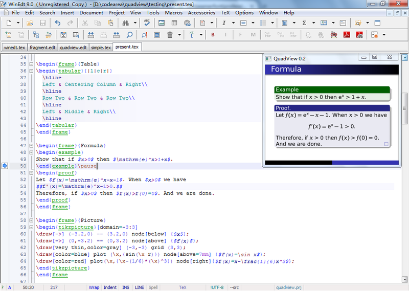

Welcome
QuadView is a live preview plugin for LaTeX editor WinEdt.
It will show the preview of current paragraph in the upper right corner of WinEdt.
And it will update the preview automatically if current paragraph has been changed.

Download
You could download the latest QuadView releases from here.
Install
-
Click menu item
Options -> Configuration Wizard. Then clickBrowse Local Folderbutton to open local folder of WinEdt. Create a subfolder namedQuadViewin the folder, and copy all QuadView files into this subfolder. -
Click menu item
Options -> Options Interface. In the sidebar select and double clickMenus and toolbar -> Main Menu. Find the following lines (line 3271-3272 in WinEdt 9) inMainMenu.inifile:MENU="&Accessories" CAPTION="&Accessories"Insert the following lines after themITEM="QuadView" CAPTION="QuadView" IMAGE="Window" MACRO="Exe('%b\QuadView\quadview.edt');" SHORTCUT="49232::Ctrl+Alt+P" REQ_FILTER=:"%!M=TeX"|"%!M=TeX:STY"|"%!M=TeX:AUX" REQ_DOCUMENT=1Click menu itemMacros->Execute Current Macroto update main menu. -
In the sidebar select and double click
Menus and toolbar -> Toolbar. Find the following lines (line 261-268 in WinEdt 9) inToolbar.inifile:BUTTON="Windows_Explorer" TYPE=6 MENU="Windows_Explorer" MENU="Command_Prompt" MENU="Calculator" MENU="-" MENU="Notepad" MENU="MS_Paint"Insert the following line after themBUTTON="QuadView"Click menu itemMacros->Execute Current Macroto update toolbar. -
Restart WinEdt. Now you could press shortcut
Ctrl+Alt+P, or click the last icon in the first toolbar, to open QuadView window.
Support
Question: Could I choose which TeX engine for compiling source fragments?
Answer: You could select default TeX engine in the popup menu.
Question: I have found some bugs with QuadView. Where could I report them?
Answer: You could report these bugs in the issues page.